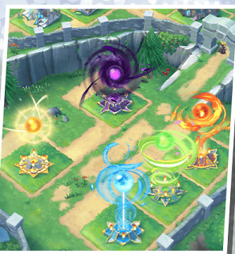

Wyrmprints
Wyrmprints are cards with an ability and some small stat boosts. They are technically equipped on weapons, but that's usually not that important. Weapons by default have 2 slots for 5 star Wyrmprints and 2 for 4 star wyrmprints, but most have the ability to unlock a 3rd 5 star slot. They can all be equipped by all adventurers, but some only affect certain ones, and others don't synergize well. For example, it's a pretty bad idea to give an adventurer without healing skills a wyrmprint that buffs healing.
Wyrmprints can be obtained through an in game store found on either the home menu or the general menu. Trading for wyrmprints takes eldwater, which is obtained from duplicates when summoning. Eldwater can also be used in the final mana nodes for characters, or increasing the level cap of a wyrmprint. Wyrmprints can be upgraded using holy water, or use eldwater to obtain copies of a wyrmprint. While not as important as weapons or dragons, wyrmprints can be very useful and shouldn't be ignored.
The types of wyrmprints you want on a weapon may be different, but there are typically some similarities. You always want a wyrmprint that buffs the weapon's skill damage, as well as one that increases damage to broken enemies. Attackers would also want ones that buff strength and crit rate, while healers want increased healing. While situational, you also want one that increases damage dealt to enemies with the correct debuff. Most elemental skills have a debuff attatched to them, so with a full party this will almost always be active.
Facilities
Facilities are buildings that can be upgraded to provide certain buffs to adventurers and dragons. The buffs to adventurers depend on either the weapon or element based on the building. Certain facilities are event exclusive, so don't worry if you don't have every one maxed. Alternatively, there are some facilities that serve a special purpose, like rupie mines, the smithy, or the halidom itself. Finally, some are just decoration and are only there if you like the asthetic.
The first facilities you get are elemental orbs, that can be upgraded to increase the health and strength of adventurers. These can be upgraded using materials obtained from elemental ruins of the appropriate element. There's also weapon buffing facilities that get upgraded through the imperial onslaught. Progressing in the story unlocks dracoliths, which buffs damage dealt by dragons. Finally, void battles, agito fights and High Dragon Battles all have their own facilities they drop materials for.
The special facilities start out with the dragonfruit tree, and rupie mines. These provide a steady flow of rupies and dragonfruit, but aren't the best source of rupies at the late game stages. Next there's the smithy, which unlocks weapon forging, which I went over on the Weapons page. Finally, there's the halidom, which produces honey tea to restore stamina. Upgrading it is probably the most important, as it increases the maximum level the smithy can be, as well as increasing the area facilities can be placed.